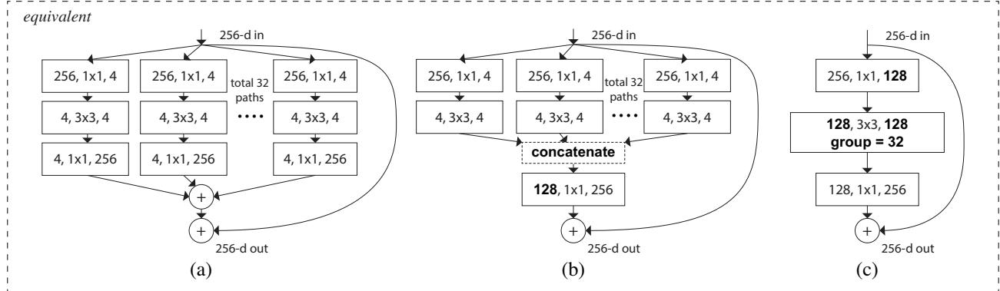
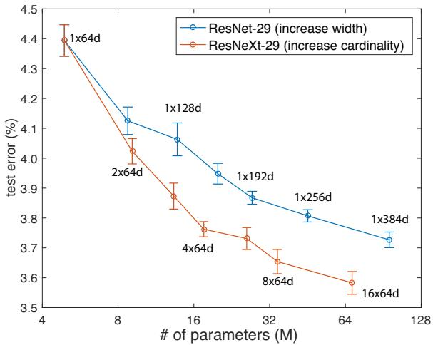

This strategy exposes a new dimension, which we call “cardinality” (the size of the set of transformations), as an essential factor in addition to the dimensions of depth and width.
好处是超参数少、好迁移。原文说这条规则「reduces the free choices of hyperparameters」，而且它「may reduce the risk of over-adapting the hyperparameters to a specific dataset」。坏处是：它只把「深度」这一个维度暴露出来（原话：depth is exposed as an essential dimension）。想更强？只能更深。
路线二：Inception 式的「split-transform-merge」
它的做法是先把输入用 1×1 拆成若干低维嵌入，再用一批各自定制的滤波器（3×3、5×5 等）变换，最后拼接。精度好，但原文点出它的痛处：「the filter numbers and sizes are tailored for each individual transformation, and the modules are customized stage-by-stage」——每一支都要单独设计，换数据集就要重新设计。「It is in general unclear how to adapt the Inception architectures to new datasets/tasks」。
一句话总结这两条路：VGG / ResNet 简单但不灵活，Inception 强但太手工。
还有一层背景：深度与宽度的收益正在递减
这是理解 ResNeXt 为什么值得单独成节的关键。上一课我们看到，ResNet 把深度从 34 一路推到 152，收益很可观。但这条曲线不会一直那么陡。原文自己给了一个非常直接的断言：「increasing cardinality is a more effective way of gaining accuracy than going deeper or wider, especially when depth and width starts to give diminishing returns for existing models」——它明确承认，深度和宽度对现有模型已经开始边际收益递减了。
顺带说一句历史：分组卷积不是这篇论文发明的。它最早出现在 AlexNet 里，当时的动机非常工程化——把模型拆到两块 GPU 上跑。而原文很诚实地承认：「To the best of our knowledge, there has been little evidence on exploiting grouped convolutions to improve accuracy」——此前几乎没有人证明过分组卷积能提精度。ResNeXt 的主张就是这个：分组卷积第一次被证明是提精度的手段，而不只是工程妥协。
3. 核心机制：基数这个新维度
ResNeXt 的做法可以拆成两句话。
第一句：把 Inception 的「每个分支各设计一套」改成「所有分支共用同一套拓扑」。原文的说法是：「we pursuit a simple realization of this idea — the transformations to be aggregated are all of the same topology. This design allows us to extend to any large number of transformations without specialized designs.」
这里有一句很值得学的原文：三种写法不是纸面推导就算完的——「We have trained all three forms and obtained the same results.」（三种都训过，结果一致），选 (c) 只是因为「more succinct and faster」。这是「等价性必须用实验确认，不能只靠推导」的一条好范例。下面这张原图就是这三兄弟。

原图注（Fig. 3）：「Figure 3. Equivalent building blocks of ResNeXt. (a): Aggregated residual transformations, the same as Fig. 1 right. (b): A block equivalent to (a), implemented as early concatenation. (c): A block equivalent to (a,b), implemented as grouped convolutions. Notations in bold text highlight the reformulation changes. A layer is denoted as (# input channels, filter size, # output channels).」 怎么看这张图：三张子图是同一个模块的三种写法，论文说它们严格等价、并且都训过。读法是看每个方块上的三元组记号「(# 输入通道, 滤波器尺寸, # 输出通道)」：(a) 是 32 条并列支路，每条都是 1×1 → 3×3 → 1×1 的窄瓶颈，分支数就是基数；(b) 把那些 1×1 合并成一次更宽的 1×1，后面用拼接拆回去；(c) 最简洁——一次 1×1（图上标注 128）→ 一次 32 组的分组卷积（每组 4 通道）→ 一次 1×1。图上加粗的记号标出的正是「这次重写改了哪里」。 要记住的一件事：论文最终选 (c) 只因为它最短最快，不是因为 (a)(b) 效果差。
还有一处需要特别澄清，否则很容易误读：它和 Inception 的关系是「继承」而不是「雷同」。原文自己做了区分——(b) 那个形式「appears similar to the Inception-ResNet module in that it concatenates multiple paths; but our module differs from all existing Inception modules in that all our paths share the same topology」。人话：Inception 是「多路但每路不一样」，ResNeXt 是「多路而且每路一模一样」。正因为每路一模一样，路数才能被单独抽出来当一个变量研究。
另外，作者也特意把它与 Network-in-Network 区分开：NiN「turns out to increase the dimension of depth」，而本文的「Network-in-Neuron」是沿着一个新维度展开——这是作者亲自给出的「本方法不是加深」的定性。
最后一个容易被忽略的细节：cardinality 这个词是借来的。它的参考文献是 G. Cantor, 1884——也就是集合论的「基数」。一个数学名词被挪来命名网络里的一个旋钮，这件事很少被提及，但它准确表达了作者的意思：基数描述的是「集合里有多少个元素」，也就是这里「有多少个变换」。
这句话在说什么：① 式 (1) 是一个普通神经元：把 D 维输入 x 的每一维乘一个权重 w、再加起来。原文把它拆成三步：Splitting（把 x 切成低维嵌入，这里是最简单的一维子空间 x_i）、Transforming（变换，这里只是缩放 w_i x_i）、Aggregating（把所有结果求和）。② 式 (2) 是本文的核心改动：把式 (1) 里那个「缩放」换成一个任意函数 T_i(x)，然后把 C 个这样的变换加起来。这里的 C 就是基数。原文强调：「C is in a position similar to D in Eqn.(1), but C need not equal D and can be an arbitrary number」——基数不必等于通道数，可以随便设。③ 式 (3) 就是在式 (2) 外面套上 ResNet 的残差形式：聚合的结果再走一次短路相加。原文只写了一句「where y is the output.」，没有展开 ReLU/BN 的位置——它们在 §4 的文字里：BN 紧跟每个卷积、ReLU 紧跟 BN，而块输出处的 ReLU 放在与短路相加之后。
然后是那张真正决定「省不省」的式子：
$$C\cdot\left(256\cdot d + 3\cdot 3\cdot d\cdot d + d\cdot 256\right) \tag{4}$$
取论文的默认配置 C = 32、d = 4，把 ResNeXt-50 的块和 ResNet-50 的块摆在一起算：
那一层
ResNet-50 的块（1×64d）
ResNeXt-50 的块（32×4d）
1×1 降维（256 → 瓶颈宽）
1×1×256×64 = 16384
1×1×256×128 = 32768
3×3 卷积
3×3×64×64 = 36864
32×(3×3×4×4) = 4608
1×1 升维（瓶颈宽 → 256）
1×1×64×256 = 16384
1×1×128×256 = 32768
合计
69632 ≈ 70k
70144 ≈ 70k
这张表里有三件事必须点出来，否则你就白算了。
第一，总数确实相等。69632 对 70144，差 0.7%，这就是论文说的「复杂度保持」。原文还诚实地补了一句：「the complexity can only be preserved approximately, but the difference ... is minor and does not bias our results」——只能近似保持。
原图注（Fig. 1）：「Figure 1. Left: A block of ResNet [14]. Right: A block of ResNeXt with cardinality = 32, with roughly the same complexity. A layer is shown as (# in channels, filter size, # out channels).」 怎么看这张图：这是全课最该盯着看的一张图。左块是 ResNet 的瓶颈块，中间那一层标着 (64, 3×3, 64)——一个整体；右块是 ResNeXt 的块，中间那一层被画成了并列的多条窄路，每条路上写着 (4, 3×3, 4)，一共 32 条。注意图注里那句「with roughly the same complexity」——两张图的参数量是刻意对齐的。 怎么对照本课的形状账：左块的中间层是 3×3×64×64 = 36864；右块中间层是 32×(3×3×4×4) = 4608。看图时你会以为右边「更多、更碎」，但算下来它的中间层反而便宜了 8 倍——省下的钱被两端那两个 1×1 用掉了。 要记住的一句话：这张图就是「不加深也能变强」这七个字的全部内容——同样的钱，右边买到了 32 条互不通信的路。

原图注（Fig. 7）：「Figure 7. Test error vs. model size on CIFAR-10. The results are computed with 10 runs, shown with standard error bars. The labels show the settings of the templates.」——CIFAR-10 上测试误差与模型规模的关系；每个结果跑 10 次、带标准误的误差棒；标签标出模板的配置。 怎么看这张图：横轴是模型规模，纵轴是测试误差，点越靠左下越好。图上每个点旁边标注的就是模板配置（形如 16×64d、32×4d 这样的记号）。要盯住的是「同一规模下不同配置的垂直差距」：规模相同时，基数更大的配置落在下方。这就说明「规模」不是唯一的解释变量——同样大的模型，怎么切分那笔预算，结果会不一样。误差棒的存在也很重要：它说明这些差距不是单次运行的偶然，而是 10 次运行后的稳定结论。 一个引用提醒：本图讨论的是 CIFAR-10 上的小模型实验，与前面 ImageNet 上的结论互补而不可混用——报数字时必须带上数据集与测试协议，这是本季反复强调的规矩。
PVT 论文报告：「The best AP^m obtained by PVT-Large is 40.7, which is 1.0 points higher than ResNeXt101-64x4d (40.7 vs. 39.7), with 20% fewer parameters.」另一张表里，RetinaNet 3×+MS 设定下 PVT-Large 是 43.4、ResNeXt101-64x4d 是 41.8。注意 ResNeXt101-64x4d 的参数量是 95.5M——这是一个「重型基线」。
④ 本季 0194 的 Swin：也把它当靶子
Swin 论文报告：「Swin Transformer achieves a high detection accuracy of 51.9 box AP and 45.0 mask AP, which are significant gains of +3.6 box AP and +3.3 mask AP over ResNeXt101-64x4d, which has similar model size, FLOPs and latency.」同一张表里 X101-32 是 48.1 / 41.6，X101-64 是 48.3 / 41.7。也就是说，2021 年两大 Transformer 主干都拿它当必须超过的那条线。
原文第 105 行原话：「although we present reformulations that exhibit concatenation or grouped convolutions, such reformulations are not always applicable for the general form of Eqn.(3), e.g., if the transformation T_i takes arbitrary forms and are heterogenous.」人话：如果各路变换不一样（像 Inception 那样），那就没法简化成分组卷积了。所以这套漂亮的等价性，是拿「所有分支必须一模一样」换来的。
毛病二：只在「深度 3」的块上有意义
原文第 103 行承认：这些改写「produce nontrivial topologies only when the block has depth 3」；如果块只有两层（ResNet 的 basic block），改写会退化成一个「trivially wide, dense module」——也就是平凡的宽稠密模块，没有任何巧妙之处。人话：这个方法必须搭在瓶颈结构上，不是随便哪个块都能切。
毛病三：加基数会饱和
原文第 147 行承认：「increasing cardinality at the price of reducing width starts to show saturating accuracy when the bottleneck width is small」——组数越多、每组越窄，收益就会饱和。所以论文自我约束：瓶颈宽度不得小于 4d。也就是说，基数这个旋钮不是能无限拧的。
毛病四：复杂度只能近似保持，而且实现不快
原文承认复杂度「can only be preserved approximately」；更实在的是速度：在这个语料里的实现「was brute-force and not parallelization-friendly」，8 张 M40 上 32×4d ResNeXt-101 每 batch 0.95s，而 FLOPs 相近的 ResNet-101 是 0.70s——多花了约 36% 的时间。作者只能说这是「a reasonable overhead」并寄望 CUDA 层面的优化。
现在把这些毛病接回 SLAM。有三条链路。
第一，它更强，但不会更快。0.95s 对 0.70s 那个正面对比已经说明了问题：换更强的主干，精度和延迟是一起涨的。而在 SLAM 里，延迟是硬约束（30 Hz 就是 33 ms/帧，见导览课那张预算尺）。所以「换个更强的主干」在 SLAM 里从来不是一个免费的改进，它必须和别的部分争预算。
第二，它提升的是「AP」，不是「几何」。Mask R-CNN 换用 ResNeXt-101-FPN 后 mask AP 从 35.4 到 36.7——注意，提升的是一个统计指标，而不是「边界有多准」这个几何量。而 SLAM 恰恰最在意后者：一个掩码偏了 5 个像素，映射到三维空间可能就是几厘米的误差。这也是第八季 MaskFusion 抱怨 Mask R-CNN「边界不精」的那条线。
第三，它仍然只是一个视觉主干。它输出的还是图像特征，没有尺度、没有深度、没有几何一致性。PanopticFusion 之所以要同时挂两个主干（ResNet-50 做语义、ResNet-101-FPN 做实例），正是因为单一的语义或实例输出都不足以支撑一个 SLAM 系统。几何约束——对极几何、BA、ICP——必须由 SLAM 自己提供。
ensemble 是多个独立训练的模型各出结果、再投票或平均；而 ResNeXt 的 32 条路是同一个模块里、共享同一个损失、联合训练的——它们从训练一开始就互相协调。原文原话是「we argue that it is imprecise to view our method as ensembling」。差别在两点：① 训练方式（联合 vs 独立）；② 代价（ensemble 要训 N 个完整模型，本方法只训一个）。为什么这件事重要：如果它是 ensemble，那么「同等算力下更强」这个结论就不成立了，因为 ensemble 的算力是成倍增长的。
用「零件不完美 → 所以 SLAM 要加几何约束」这个句式，为 ResNeXt 写一句话。
展开查看答案
参考写法：「ResNeXt 用同样的算力把检测/分割的精度又推高了一点（Mask R-CNN 的 mask AP 35.4 → 36.7），但它提升的是统计意义上的平均指标，既没有改善掩码边界的几何准确度、也没有变快（0.95s 对 0.70s）；所以 SLAM 不能把语义或实例掩码直接当几何使用，必须用对极几何、光束法平差与点云配准去交叉验证物体的位置、尺度与运动状态。」注意句式里的三要素：零件提供了什么（更强的语义/实例先验）、它缺什么（几何精度与速度）、所以 SLAM 补什么（几何约束）。这正是本季反复要练的那条链条。
假设有人向你推销「用 ResNeXt101-64x4d 替换我们 SLAM 系统里的 ResNet-18 骨干」。请列出你会提出的三个反对或追问理由。
展开查看答案
① 时间预算：ResNet-18 与 ResNeXt101-64x4d 的参数量差着几十倍（前者约千万量级，后者 95.5M 是重型基线），延迟会涨一个量级——而 SLAM 只有 33 ms/帧的预算（回链导览课的时间预算尺与 TartanVO 的 40 ms）；② 收益归因：换主干带来的 AP 提升是统计指标，未必改善 SLAM 真正依赖的边界几何精度（回链第八季 MaskFusion 对「边界不精」的抱怨）；③ 可替代性：如果目标是更强的特征，0194 讲的 Swin / PVT 在同一张对照表上比 ResNeXt101-64x4d 更强且更省（Swin 高 3.6 box AP / 3.3 mask AP，PVT-Large 高 1.0 AP^m 且参数少 20%）——那么为什么还要选 2017 年的那一款？